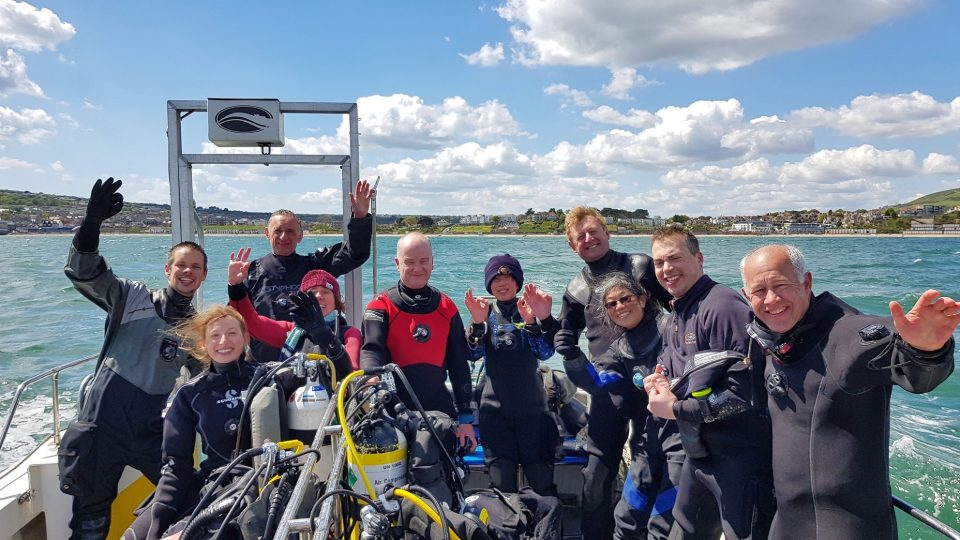
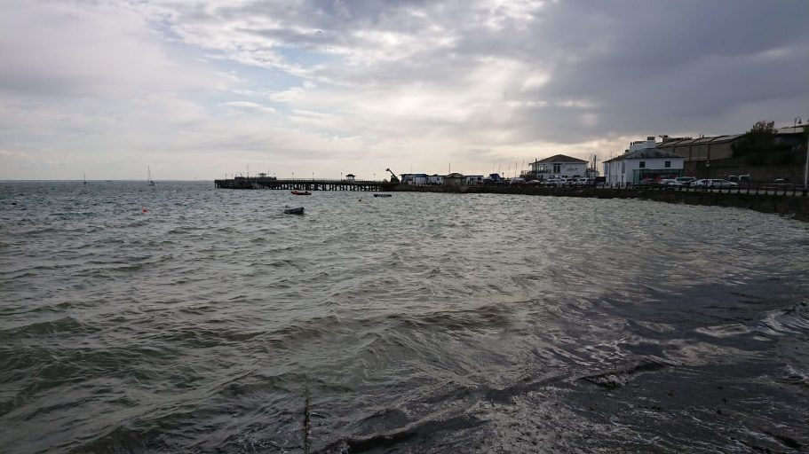
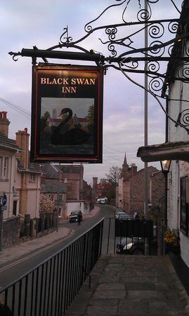
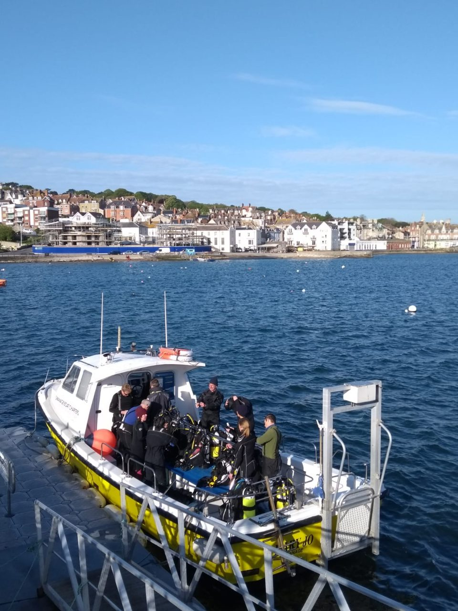

Swanage 2019

Weekend conditions
Water temperature of 11 degrees Celsius.
Wind speeds of force 4-6 on Saturday, 2-3 on Sunday.
Friday 3rdMay 2019
We made our way across to Swanage on Friday afternoon/evening, arriving at the Swanage Coastal Park, successfully navigating our way from the south east.
News from Bryan, the Skipper of the Mary Jo (our chartered weekend hard boat), was that high winds forecast for Saturday, meant no dives were currently planned for Saturday, unless weather conditions improved.
On settling into the Coastal Park, we made our way into Swanage for dinner and after dinner drinks at the Black Swan Inn!


Saturday 4thMay
The next morning, we waited in anticipation for news of improving weather conditions, and Bryan confirmed the planned afternoon wreck dive to visit the Fleur de Lys was on!
So, mid-morning we headed off to Swanage Pier and found sufficient car spaces to park up side-by-side off the pier and begun making our preparations, with the assistance of the shop/rental shop of Divers Downs. With the Mary Jo ready and with divers and equipment safely on board, we made our way out into Swanage Bay to where the Fleur de Lys lay in waiting. Following a successful dive outing and an opportunity for some of us to try our new equipment(!), we settled into pizza and pasta, followed by an early night, in anticipation for what was promising to be improved weather conditions for the forthcoming day.
Sunday 5thMay
At 0630 we queued briefly for parking on Swanage Pier under clear blue skies and a rising sun, in anticipation for the days’ 2 planned drift dives. With parking and preparations complete, we set off once again on the Mary Jo.

<Peverill Ledges>* *With slower tide speeds and improved visibility, Peverill Ledges gave us increased opportunities to spot wildlife and other maritime objects.
<Old Harry Rocks> The tides were noticeably stronger off Old Harry Rocks and probably as close an experience as we’ll get to being flying superheroes (or being in a washing machine)! With the second of the days’ drift dives complete, we began making our way home, for a well-earned night’s sleep, and fortunately with a Bank Holiday Monday to help rest up and recover.
Particular thanks to Trevor for organising!
By Ollie